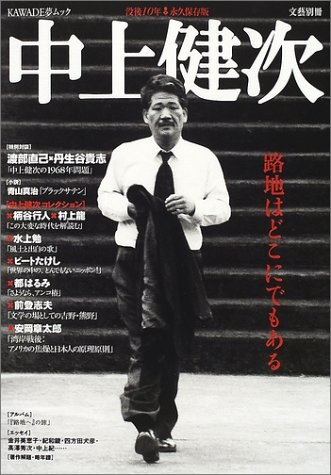

Required Texts
These books need to be purchased.
Annotated Japanese Literary Gems. Vol. 1
ISBN-10: 188544530X
ISBN-13: 978-1885445308
Annotated Japanese Literary Gems. Vol. 1
ISBN-10: 1933947357
ISBN-13: 978-1933947358
To understand salient features and develop basic knowledge in the following areas: Modern Japanese literary history, literary aesthetics, major forms and genres of modern Japanese literature.
To learn to interpret literature through sensitivity to cultural context and symbolic content while coming to understand the stakes involved in linguistic interpretation.
To refine your understanding of the relationship between works of art and historical/social/cultural context.
To learn to organize thoughts and express them clearly in Japanese.
Improve Japanese language abilities and learn basic vocabularies of literature in Japanese.
To develop communications skills in responding to literature.
To learn how to research papers, carry on class discussions, and give presentations in Japanese.
To develop basic (web-based) research skills in Japanese.
To learn to how to self teach new topics in Japanese language for when you are no longer enrolled in a Japanese course.
Participation:
Attendance and classroom participation 30%
5 Short Assignments 10%
In-class presentation 10%
Group Project 20%
Literary Terms Quizzes 10%
One Class Translation Project 10%
5 Reading Journals 10%
Coursework Requirements
Attendance and participation: 30%
Attendance:
Students are expected to attend all class meetings. If a student has extenuating circumstances regarding this requirements, that student should contact me immediately. This is the easiest portion of your grade. Show up with your materials and you get points.
In order to receive credit for attendance, you must not only be present in class, but also bring marked copies of the readings to class and be prepared to give your opinions and questions on the reading. You must also bring any written material assigned for that class meeting.
In order to receive credit for in-class discussion, you must email me a self-assessment report in English. Every month students must email me a self-evaluation report assessing their own in-class performance. The self-assessment should include the words “self-assessment” in the subject header and a letter grade of A, B, C, D, or F. Due dates are posted on the schedule.
Participation:
You will not be given participation points if you don’t show up having attempted the readings and brought questions and concerns into the classroom discussion.
You are responsible for completing a given day’s readings prior to class. The instructor reserves the right to give pop quizzes on the readings if students seem not to be keeping up with the assignments.
All readings appear in our texts or will be provided via links from the course website. Students should bring copies of readings to class.
Pop quizzes:
If students are not coming to class prepared to participate, there may be pop quizzes that factor into the grade for preparation. There will be one scheduled quizzes on the Japanese Literary Terms. The total value of all quizzes will be 10% of the final grade or 1/3 of the attendance and preparation grade.
Short assignments 10%
5 short homework assignments based on readings, discussions, and your research. The 5 homework will be assigned on Thursday classes meetings to be due on the following Tuesday meeting. See individual assignments for instructions.
In-class Individual Presentation 10%
The presentation will consist of a research project and in-class oral/visual presentation. One purpose of the presentations is to educate the class on some contexts to a given week’s reading which may be confusing or which may have been touched on only tangentially. Another is to introduce new vocabulary and grammar to students that relates to the content of the presentation. Students will also make interpretive readings of particular scenes from stories during their presentations that relate the context to the story. As a companion to the presentations,
All students must plan a meeting with the instructor to discuss their plan and work at least two weeks prior to their presentation.
All students must sign up for a week to give a presentation by the third week of class.
For more detail, see presentation guidelines.
Group Project 20%
Students will sign up for a group project by week three. All projects must be approved by Professor Abel one week prior to presenting your project to the class. The subject of the project is open to the students in the group, but it must involve the use of your language skills to make sense of a literary text. For example, possible projects include a short translation of a literary work, the performance of a scene in a novel or drama, or subtitling an adaptation of a literary work.
Literary Terms Quizzes 10%
Early in the semester we will have four short literary terms quizzes to help you learn the vocabulary you need to discuss literature in Japanese.
One Class Translation Project 10%
There are a few readings on the syllabus that have never been translated into Japanese. We will choose one of them and work as a group to translate it.
5 Reading Journals 10%
Over the course of the semester you will be responsible for turning in 5 reading journals of 250-500 characters each. You may choose which week you would like to do a journal for, but they must be submitted within one week from the reading’s appearance on the schedule. Journals should summarize the main plot and give your analysis of the importance of one scene or image in particular. These may be typed.
----
Penn State welcomes students with disabilities into the University's
educational programs. If you have a disability-related need for reasonable
academic adjustments in this course, contact the Office for Disability
Services (ODS) at 814-863-1807 (V/TTY). For further information regarding
ODS, please visit the Office for Disability Services Web site at
In order to receive consideration for course accommodations, you must
contact ODS and provide documentation (see the documentation guidelines at
http://equity.psu.edu/ods/guidelines/documentation-guidelines). If the
documentation supports the need for academic adjustments, ODS will provide
a letter identifying appropriate academic adjustments. Please share this
letter and discuss the adjustments with your instructor as early in the
course as possible. You must contact ODS and request academic adjustment
letters at the beginning of each semester.
----
Evaluation
Grading Scale
A 93 and above
A- 90-92
B+ 87-89
B 83-86
B- 80-82
C+ 76-79
C 70-75
D 60-69
F 59 and below
Evaluation Guidelines for Attendance & Participation
90-100 % Student is well prepared, as demonstrated by her/his critical response papers and comments made in class; is interested in and respects others‘ opinions; asks and responds to questions; demonstrates knowledge of course materials; fosters a vibrant intellectual community.
80-89 % Student is generally prepared, makes an effort to refer to readings and course topics; is willing to participate in discussions in class.
70-79 % Student reluctantly participates in class activities and is often unprepared; rarely practices critical thinking; does not demonstrate sufficient knowledge of course materials.
60-69 % Student is unwilling to participate in class activities and unable to ask or answer questions; is generally unprepared; demonstrates little knowledge of course materials.
0-59 % Student is absent (physically or mentally), unprepared, or disruptive in class.
University Policy
Expectations for Classroom Behavior
Civil behaviors are expected in the classroom. Do not use computer for activities unrelated to the class. Do not use your cell phone in class. Penn State Code of Conduct (http://www.sa.psu.edu/ja/conduct.shtml) prohibits "obstruction or disruption of classes‖ (Policy Statement 1). Disruption is defined as ―an action or combination of actions by one or more individuals that unreasonably interferes with, hinders, obstructs, or prevents the operation of the University or infringes on the rights of others to freely participate in its programs and services." Course instructors have the authority to request that a disruptive student leave a class for the remainder of the period. Examples of disruptive behavior include: inappropriate in-class behavior including harassing other students/faculty members, constant interruptions, and the like. Cases of disruptive behaviors will be referred to the Associate Director of Student Affairs for judicial action. Sanctions may include moving the student to another section of the course or administrative removal from the course resulting in a grade of F. Students can direct any questions or concerns they have with the standards of behavior policy to the Associate Director of Judicial Affairs (1-814-863-0342).
Academic Integrity
Dishonesty of any kind will not be tolerated in this course. Dishonesty includes, but is not limited to, cheating, plagiarizing, fabricating information, facilitating acts of academic dishonesty by others, having unauthorized possession of exams, submitting work of another person or work previously used without informing the instructor, or tampering with the academic work of other students. Students who are found to be dishonest will receive academic sanctions and will be reported to the University‘s Judicial Affairs office for possible further disciplinary sanctions. Penn State defines academic integrity as the pursuit of scholarly activity in an open, honest and responsible manner. All students should act with personal integrity, respect other students‘ dignity, rights and property, and help create and maintain an environment in which all can succeed through the fruits of their efforts (Faculty Senate Policy 49-20). Possible academic sanctions include reduced course grade to F for course. In addition, there are disciplinary sanctions that may include the XF grade and permanent expulsion.
Access Statement
The Penn State University encourages qualified students with disabilities to participate in its programs and activities. If you anticipate needing any kind of accommodation in this course or have any questions about physical access, please tell the instructor as soon as possible. For more information, visit: http://www.equity.psu.edu/ods/student/confidential_release.asp
Registration Policy
During the drop/add period at the beginning of the semester, the Department of Comparative Literature encourages students to visit all courses in order to make an informative judgment about which ones to take. After the first week, however, only students registered in the course may remain. Any late-add (or reenrollment of a dropped registration) after the third week of the semester has to be petitioned to the department on a form available in the office, 427 Burrowes.
目標 Course Objectives:

The syllabus is in flux. Check here for most recent updates. Any printout is likely already out of date.
Updated Thursday, January 8, 2015

目標 Course Objectives and Requirements: